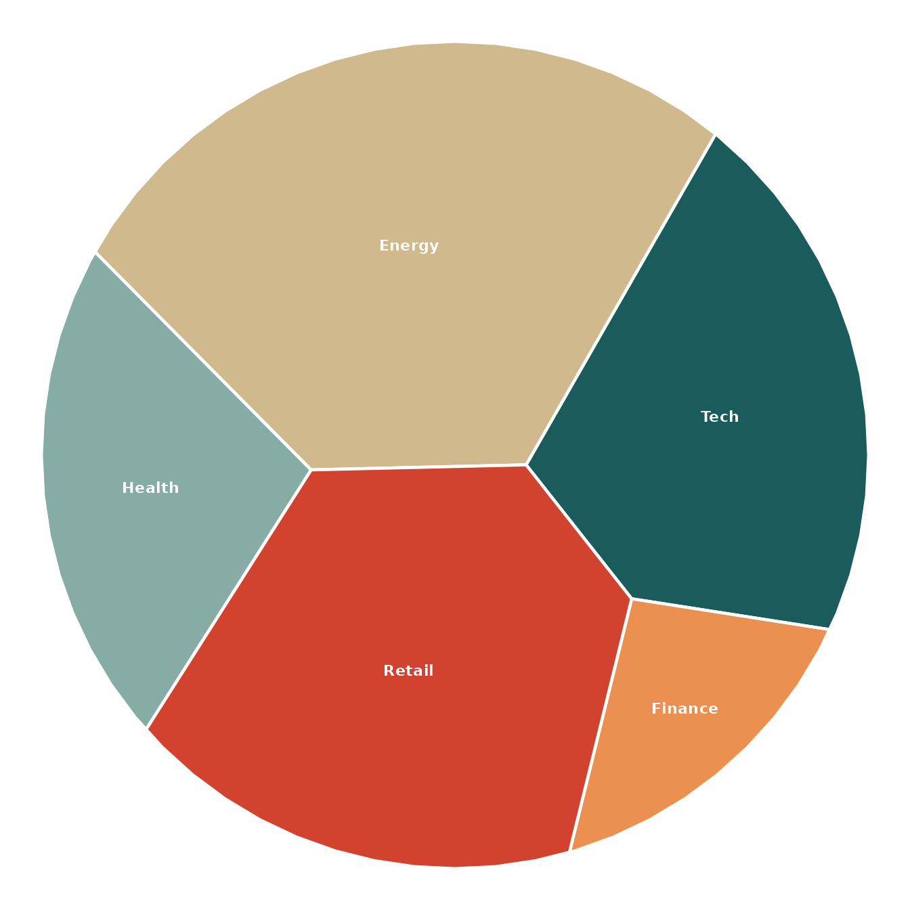
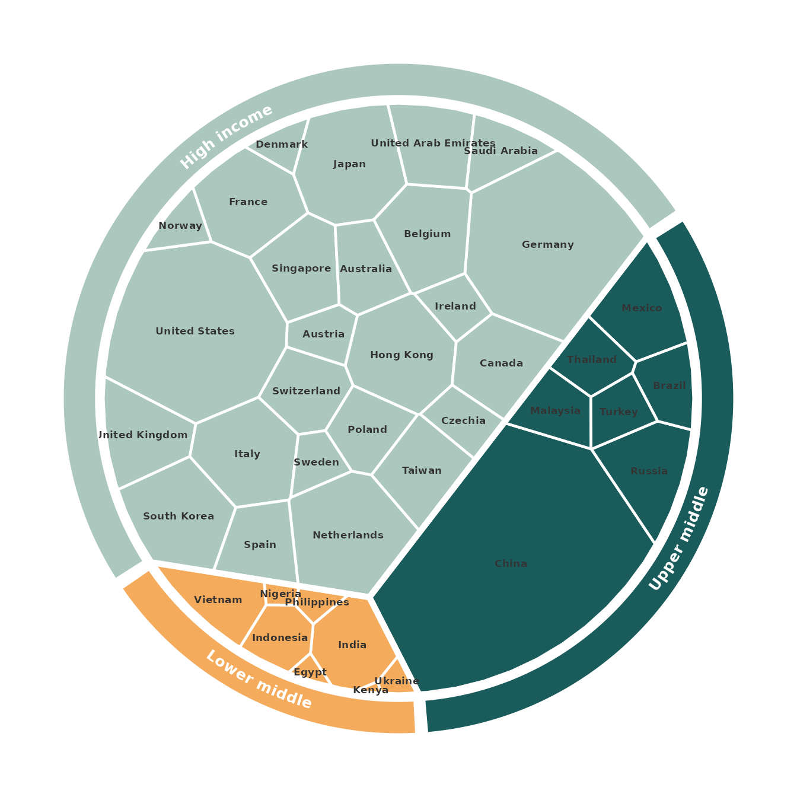

ggvmap builds Voronoi treemaps — space-filling
partitions where each cell’s area is proportional to a weight. Beyond
the flat map, three features let you reproduce publication-style
infographics:
- Hierarchical (grouped) layouts — cells organised into sectors by group.
- An outer annotation ring — a labelled coloured band wrapping the map.
- Flag / image / value annotations — pictures and numbers on each cell.
A flat map
vm <- voronoi_map(
weights = c(30, 20, 50, 10, 40),
labels = c("Tech", "Health", "Energy", "Finance", "Retail"),
clip = clip_circle(),
seed = 42
)
ggvmap(vm, palette = "alger")
(palette = "alger" is a built-in four-colour palette;
the default is the colourblind-safe Okabe–Ito palette.)
Hierarchical layouts and the outer ring
Pass a group vector and voronoi_map() first
divides the disk into one sector per group (area ∝ the group’s total
weight), then fills each sector with its members.
vm_add_ring() wraps the result in a colour-coded, labelled
ring whose segments line up with the sectors — the world-exports
infographic style.
data(world_exports)
vm <- voronoi_map(
weights = world_exports$exports,
labels = world_exports$country,
group = as.character(world_exports$income_group),
clip = clip_circle(),
seed = 1,
max_iter = 80
)
ggvmap(vm, label_size = 2.3, label_col = "grey20", palette = "alger") |>
vm_add_ring(width = 0.11, label_size = 3.4, palette = "alger")
The annotation helpers use the |> pipe: each reads
the underlying map from the plot and returns a new plot, so they chain
naturally.
Flags and value labels
vm_add_flags() resolves country names (English or
German) to national flags — by default via
ggimage::geom_flag() (method = "geom_flag"),
or from flagcdn.com with
method = "url" (which also supports an offline
cache = TRUE). vm_add_labels() prints a value
under each name — the merchant-fleet infographic style. (These examples
need an internet connection and the ggimage package, so
they are not evaluated here.)
data(merchant_fleet)
vm <- voronoi_map(
weights = merchant_fleet$owned,
labels = merchant_fleet$country,
clip = clip_square(),
seed = 3
)
ggvmap(vm, label_size = 3.2, label_col = "grey15", palette = "alger") |>
vm_add_labels(
value = stats::setNames(merchant_fleet$owned, merchant_fleet$country),
size = 2.6, nudge_y = -0.035
) |>
vm_add_flags(size = 0.05, nudge_y = 0.05)For offline rendering, pre-download the flags once:
iso <- country_to_iso(merchant_fleet$country)
files <- flag_cache(iso, dir = "flags") # writes flags/<iso>.pngvm_add_images() is the generic version — pass any vector
of image paths or URLs (logos, icons, photos) instead of flags.
Interactive maps
Set interactive = TRUE to make the cells hoverable
(highlight + tooltip) via ggiraph, then render
the widget with vm_girafe(). It works in R Markdown /
Quarto, Shiny and the RStudio viewer. Hover the cells
below — this one is live:
vm <- voronoi_map(
weights = c(30, 20, 50, 10, 40, 15, 25),
labels = c("Tech", "Health", "Energy", "Finance", "Retail", "Media", "Auto"),
clip = clip_circle(), seed = 42
)
ggvmap(vm, interactive = TRUE) |>
vm_girafe(width_svg = 6, height_svg = 6)Pass tooltip = for custom hover text
(length-n, named by label, or length 1):